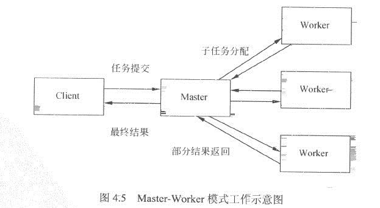
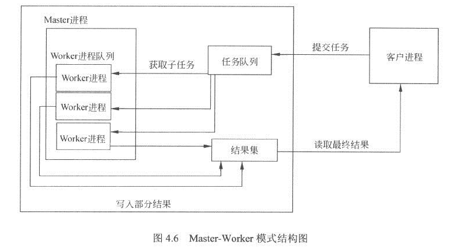

Master-Worker模式
2016-03-23 23:23:54
Master-Worker模式是常用的并行模式之一。它的核心思想是，系统由两类进程协作工作：Master进程和Worker进程。Master进程负责接收和分配任务，Worker进程负责处理子任务。当各个Worker进程将子任务处理完成后，将结果返回给Master进程，由Master进程做归纳和汇总，从而得到系统的最终结果，其处理过程如下图：
Master-Worker模式的好处，它能够将一个大任务分解成若干个小任务，并行执行，从而提高系统的吞吐量。而对于系统请求者Client来说，任务一旦提交，Master进程会分配任务并立即返回，并不会等待系统全部处理完成后再返回，其处理过程是异步的。因此Client不会出现等待现象。
Master-Worker模式结构Master-Worker模式的结构相对比较简单。如下图所示，Master进程为主要进程，它维护了一个Worker进程队列、子任务队列和子结果集。Worker进程队列中的Worker进程，不停地从任务队列中提取要处理的子任务，并将任务的处理结果写入结果集。
注意：Master-Worker模式是一种使用多线程进行数据处理的结构。多个Worker进程协作处理用户请求，Master进程负责维护Worker进程，并整合最终处理结果。
Master-Worker的代码实现
import java.util.HashMap;
import java.util.Map;
import java.util.Queue;
import java.util.concurrent.ConcurrentHashMap;
import java.util.concurrent.ConcurrentLinkedQueue;
public class Master {
//任务队列
protected Queue<Object> workQueue = new ConcurrentLinkedQueue<Object>();
//Worker进程队列
protected Map<String, Thread> threadMap = new HashMap<String, Thread>();
//子任务处理结果集
protected Map<String, Object> resultMap = new ConcurrentHashMap<String, Object>();
//是否所有的子任务都结束了
public boolean isComplete(){
for(Map.Entry<String, Thread> entry : threadMap.entrySet()){
if(entry.getValue().getState() != Thread.State.TERMINATED){
return false;
}
}
return true;
}
//Master的构造，需要一个Worker进程逻辑，和需要的Worker进程数量
public Master(Worker worker, int countWorker){
worker.setWorkQueue(workQueue);
worker.setResultMap(resultMap);
for(int i=0; i < countWorker; i++){
threadMap.put(Integer.toString(i), new Thread(worker, Integer.toString(i)));
}
}
//提交一个任务
public void submit(Object job){
workQueue.add(job);
}
//返回子任务结果集
public Map<String, Object> getResultMap(){
return resultMap;
}
//开始运行所有的Worker进程，进行处理
public void execute(){
for(Map.Entry<String, Thread> entry : threadMap.entrySet()){
entry.getValue().start();
}
}
}
import java.util.Map;
import java.util.Queue;
public class Worker implements Runnable {
//任务队列，用于取得子任务
protected Queue<Object> workQueue;
//子任务处理结果集
protected Map<String, Object> resultMap;
public void setWorkQueue(Queue<Object> workQueue){
this.workQueue = workQueue;
}
public void setResultMap(Map<String, Object> resultMap){
this.resultMap = resultMap;
}
//子任务处理的逻辑，大子类中实现具体逻辑
public Object handle(Object input){
return input;
}
public void run() {
while(true){
//获取子任务
Object input = workQueue.poll();
if(input == null) break;
//处理子任务
Object obj = handle(input);
//将处理结果写入结果集
resultMap.put(Integer.toString(input.hashCode()), obj);
}
}
}